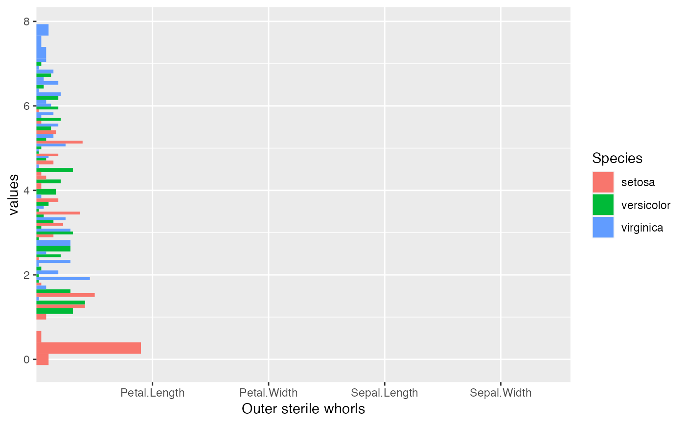

position_dodge_.RdDodging preserves the vertical position of an geom while adjusting the horizontal position.
position_dodge_() dodges bars side by side but conditional on locations.
Dodging width, when different to the width of the individual elements. This is useful when you want to align narrow geoms with wider geoms. See the examples.
Should dodging preserve the total width of all elements at a position, or the width of a single element?
Padding between elements at the same position. Elements are shrunk by this proportion to allow space between them. Defaults to 0.1.
If TRUE, will reverse the default stacking order.
This is useful if you're rotating both the plot and legend.
It is built based on position_dodge, but used for multiple locations, such as
geom_hist_() or geom_density_(). Check examples to see the difference.
See geom_hist_ and geom_serialaxes_hist for more examples.
Other position adjustments for multiple locations:
position_identity_,
position_stack_, position_fill_
Parent: position_dodge
if(require(dplyr)) {
p <- iris %>%
tidyr::pivot_longer(cols = -Species,
names_to = "Outer sterile whorls",
values_to = "values") %>%
ggplot(data,
mapping = aes(x = `Outer sterile whorls`,
y = values,
fill = Species))
p + geom_hist_(position = position_dodge_())
}
#> `stat_bin()` using `bins = 30`. Pick better value with `binwidth`.
# \donttest{
# all bins are shifted on the left
p +
geom_hist_(position = position_dodge())
#> `stat_bin()` using `bins = 30`. Pick better value with `binwidth`.

# }